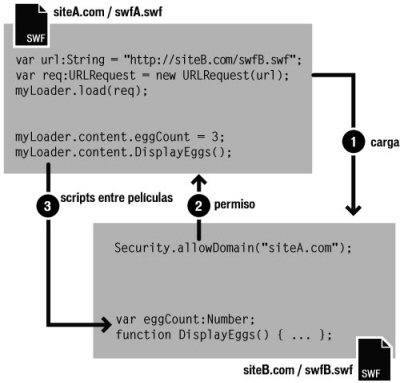

| Paquete | flash.system |
| Clase | public final class Security |
| Herencia | Security |
| Versión del lenguaje: | ActionScript 3.0 |
| Versiones de motor de ejecución: | AIR 1.0, Flash Player 9, Flash Lite 4 |
 Ocultar propiedades públicas heredadas
Ocultar propiedades públicas heredadas Mostrar propiedades públicas heredadas
Mostrar propiedades públicas heredadas| Propiedad | Definido por | ||
|---|---|---|---|
 | constructor : Object
Una referencia a la clase de objeto o función constructora para una instancia de objeto determinada. | Object | |
| exactSettings : Boolean [estática]
Determina el modo en que Flash Player o AIR elige el dominio que se utiliza para determinadas configuraciones de contenido, incluida la configuración para permisos de cámaras y micrófonos, cuotas de almacenamiento y almacenamiento de objetos compartidos persistentes. | Security | ||
| pageDomain : String [estática] [solo lectura]
La parte del dominio de la página HTML que contiene el swf. | Security | ||
| sandboxType : String [estática] [solo lectura]
Indica el tipo de entorno limitado de seguridad en el que actúa el archivo | Security | ||
| Método | Definido por | ||
|---|---|---|---|
[estática]
Permite a los archivos SWF de los dominios identificados acceder a los objetos y variables del archivo SWF que contiene la llamada allowDomain(). | Security | ||
[estática]
Permite a los archivos SWF y HTML de los dominios identificados acceder a los objetos y variables del archivo SWF, que se aloja mediante el protocolo HTTPS. | Security | ||
|
Indica si un objeto tiene definida una propiedad especificada. | Object | |
|
Indica si hay una instancia de la clase Object en la cadena de prototipo del objeto especificado como parámetro. | Object | |
[estática]
Busca un archivo de política en la ubicación especificada por el parámetro url. | Security | ||
|
Indica si existe la propiedad especificada y si es enumerable. | Object | |
|
Establece la disponibilidad de una propiedad dinámica para operaciones de bucle. | Object | |
[estática]
Muestra el panel Parámetros de seguridad de Flash Player. | Security | ||
|
Devuelve la representación de cadena de este objeto, con formato según las convenciones específicas de configuración regional. | Object | |
|
Devuelve la representación de cadena del objeto especificado. | Object | |
|
Devuelve el valor simple del objeto especificado. | Object | |
| Constante | Definido por | ||
|---|---|---|---|
| APPLICATION : String = "application" [estática]
Este archivo se ejecuta en una aplicación de AIR y fue instalado con el paquete (archivo de AIR) de dicha aplicación. | Security | ||
| LOCAL_TRUSTED : String = "localTrusted" [estática]
El es un archivo local y el usuario ha determinado que es de confianza, mediante el Administrador de configuración de Flash Player o un archivo de configuración FlashPlayerTrust. | Security | ||
| LOCAL_WITH_FILE : String = "localWithFile" [estática]
Este archivo es un archivo local, no es de confianza para el usuario y no es un archivo SWF publicado con designación de red. | Security | ||
| LOCAL_WITH_NETWORK : String = "localWithNetwork" [estática]
Este archivo es un archivo local, no es de confianza para el usuario y es un archivo SWF publicado con designación de red. | Security | ||
| REMOTE : String = "remote" [estática]
Este archivo procede de una URL de Internet y se rige por reglas de entorno limitado basado en dominio. | Security | ||
exactSettings | propiedad |
exactSettings:Boolean| Versión del lenguaje: | ActionScript 3.0 |
| Versiones de motor de ejecución: | AIR 1.0, Flash Player 9, Flash Lite 4 |
Determina el modo en que Flash Player o AIR elige el dominio que se utiliza para determinadas configuraciones de contenido, incluida la configuración para permisos de cámaras y micrófonos, cuotas de almacenamiento y almacenamiento de objetos compartidos persistentes. Para que el archivo SWF utilice la misma configuración que en Flash Player 6, establezca exactSettings como false.
En Flash Player 6, el dominio utilizado para esta configuración del reproductor se basaba en el fragmento final del dominio del archivo SWF. Si el dominio de un archivo SWF contiene más de dos segmentos, como en www.example.com, se elimina el primer segmento del dominio ("www") y se utiliza el fragmento restante: example.com. De este modo, en Flash Player 6, tanto www.example.com como store.example.com utilizan example.com como dominio para esta configuración. Del mismo modo, tanto www.example.co.uk como store.example.co.uk utilizan example.co.uk como dominio para esta configuración. En Flash Player 7 y versiones posteriores, la configuración del reproductor se elige de forma predeterminada según el dominio exacto del archivo SWF; por ejemplo, un archivo SWF de www.example.com utiliza la configuración del reproductor para www.example.com y un archivo SWF de store.example.com utiliza la configuración del reproductor independiente para store.example.com.
Si Security.exactSettings se define como true, Flash Player o AIR utiliza dominios exactos para la configuración del reproductor. El valor predeterminado para exactSettings es true. Si cambia el valor predeterminado de exactSettings, debe hacerlo antes de que se produzca ningún evento que requiera que Flash Player o AIR elija la configuración del reproductor; por ejemplo, con una cámara o un micrófono, o bien, recuperando un objeto compartido persistente.
Si ya ha publicado anteriormente un archivo SWF de la versión 6, ha creado objetos compartidos persistentes a partir de él y ahora necesita recuperarlo del archivo SWF tras migrar a una versión 7 o posterior, debe definir Security.exactSettings como false antes de llamar a SharedObject.getLocal().
Implementación
public static function get exactSettings():Boolean public static function set exactSettings(value:Boolean):voidEmite
SecurityError — Una aplicación de Flash Player o de AIR ya ha utilizado el valor de exactSettings al menos una vez en una decisión sobre la configuración del reproductor.
|
pageDomain | propiedad |
pageDomain:String [solo lectura] | Versión del lenguaje: | ActionScript 3.0 |
| Versiones de motor de ejecución: | Flash Player 10.3, AIR 2.7 |
La parte del dominio de la página HTML que contiene el swf.
Por razones de seguridad, el método no devuelve la URL completa, sólo el dominio de la página, por ejemplo, http://www.example.com. Si este archivo SWF no está contenido en una página HTML, o no puede acceder al dominio de la página por razones de seguridad, esta propiedad devuelve la cadena undefined.
Implementación
public static function get pageDomain():StringsandboxType | propiedad |
sandboxType:String [solo lectura] | Versión del lenguaje: | ActionScript 3.0 |
| Versiones de motor de ejecución: | AIR 1.0, Flash Player 9, Flash Lite 4 |
Indica el tipo de entorno limitado de seguridad en el que actúa el archivo
Security.sandboxType tiene uno de los valores siguientes:
remote(Security.REMOTE): este archivo procede de una URL de Internet y se rige por reglas de entorno limitado basado en dominio.localWithFile(Security.LOCAL_WITH_FILE): este archivo es un archivo local, no es de confianza para el usuario y no es un archivo SWF publicado con designación de red. El archivo puede leer en orígenes de datos locales, pero no puede comunicarse con Internet.localWithNetwork(Security.LOCAL_WITH_NETWORK): este SWF es un archivo local y no es de confianza para el usuario. Se ha publicado en una designación de red. El archivo SWF se puede comunicar con Internet pero no puede leer en fuentes de datos locales.localTrusted(Security.LOCAL_TRUSTED): este es un archivo local y el usuario ha determinado que es de confianza, mediante el Administrador de configuración de Flash Player o un archivo de configuración FlashPlayerTrust. El archivo puede leer en orígenes de datos locales y puede comunicarse con Internet.application(Security.APPLICATION): este archivo se ejecuta en una aplicación de AIR y fue instalado con el paquete (archivo de AIR) de dicha aplicación. De forma predeterminada, los archivos del entorno limitado de la aplicación de AIR pueden tener scripts cruzados desde cualquier dominio (aunque los archivos fuera del entorno limitado de la aplicación de AIR no enviar scripts cruzados al archivo de AIR). De forma predeterminada, los archivos del entorno limitado de la aplicación de AIR pueden cargar contenido y datos desde cualquier dominio.
Para obtener más información, consulte el tema del Centro de desarrollo de Flash Player Seguridad.
Implementación
public static function get sandboxType():StringElementos de API relacionados
allowDomain | () | método |
public static function allowDomain(... domains):void| Versión del lenguaje: | ActionScript 3.0 |
| Versiones de motor de ejecución: | AIR 1.0, Flash Player 9, Flash Lite 4 |
Permite a los archivos SWF de los dominios identificados acceder a los objetos y variables del archivo SWF que contiene la llamada allowDomain().
Nota: al llamar a este método desde el código en el entorno limitado de seguridad de la aplicación de AIR, se emite una excepción SecurityError. El contenido que esté fuera del dominio de seguridad de la aplicación no podrá compartir directamente el contenido de scripts en el entorno limitado de la aplicación. No obstante, el contenido que esté fuera de dicho entorno se podrá comunicar con el contenido del entorno limitado de seguridad de la aplicación a través de un puente de entorno limitado.
Si hay dos archivos SWF en el mismo dominio (por ejemplo, http://misitio.com/swfA.swf y http://misitio.com/swfB.swf), el archivo swfA.swf puede examinar y modificar variables, objetos, propiedades, métodos, etc. en swfB.swf, y swfB.swf puede hacer lo mismo en swfA.swf. Esto se denomina uso de scripts entre películas o uso de scripts.
Si los dos archivos SWF están en dominios diferentes (por ejemplo, http://mysite.com/swfA.swf y http://othersite.com/siteB.swf), de forma predetermina Flash Player no permite a swfA.swf usar scripts en swfB.swf, ni viceversa. Un archivo SWF proporciona permisos a archivos SWF de otros dominios llamando a Security.allowDomain(). Esto se denomina creación de scripts en varios dominios. Al llamar a Security.allowDomain("siteA.com"), siteB.swf concede permiso a siteA.swf para hacer scripts.
En cualquier operación entre dominios, es importante tener claro qué dos partes están involucradas. En esta sección, llamaremos parte que accede a la que usa scripts entre películas (normalmente el SWF que accede a otro) y parte a la que se accede a la otra (por lo general, el archivo SWF al que se accede). Si siteA.swf usa scripts en siteB.swf, siteA.swf será la parte que accede y siteB.swf será la parte a la que se accede.

Los permisos entre dominios establecidos con allowDomain() son asimétricos. En el ejemplo anterior, siteA.swf puede usar scripts en siteB.swf, pero siteB.swf no puede hacerlo en siteA.swf, ya que siteA.swf no ha llamado a allowDomain() para dar permiso a los archivos SWF de siteB.com para hacer scripts. Puede establecer permisos simétricos si ambos archivos SWF llaman a allowDomain().
Flash Player protege los archivos SWF no sólo de los scripts creados en varios dominios por otros archivos SWF, sino también de los originados por archivos HTML. Los scripts de HTML se pueden usar en SWF mediante el uso de interfaces API anteriores del navegador, como SetVariable o invocando las funciones callback definidas a través de ExternalInterface.addCallback(). Cuando el uso de scripts de HTML en SWF traspasa los dominios, el archivo SWF debe llamar a allowDomain() para evitar que la operación falle, tanto si es la parte que accede como si es la parte a la que se accede.
Cuando se especifica una dirección IP como parámetro en allowDomain(), no se permite el acceso de las partes con origen en la dirección IP especificada. Sólo se permite el acceso a la parte que contiene la dirección IP especificada en su URL y no un nombre de dominio que corresponda a la dirección IP.
Diferencias específicas entre versiones
Las reglas de seguridad entre dominios de Flash Player han evolucionado de una versión a otra. En la tabla siguiente, se resumen las diferencias.
| Versión de SWF más reciente que interviene en el uso de scripts entre películas | ¿Se necesita allowDomain()? | ¿Se necesita allowInsecureDomain()? | ¿Qué archivo SWF debe llamar a allowDomain() o allowInsecureDomain()? | ¿Qué se puede especificar en allowDomain() o allowInsecureDomain()? |
|---|---|---|---|---|
| 5 o anterior | No | No | N/D | N/D |
| 6 | Sí, si los superdominios no coinciden. | No | El archivo SWF al que se accede o cualquier SWF con el mismo superdominio que éste. |
|
| 7 | Sí, si los dominios no coinciden exactamente. | Sí, si se realiza el acceso de HHTP en HTTPS (incluso si los dominios coinciden exactamente). | El archivo SWF al que se accede o cualquier SWF con el mismo dominio que éste. |
|
| 8 o posterior | Sí, si los dominios no coinciden exactamente. | Sí, si se realiza el acceso de HHTP en HTTPS (incluso si los dominios coinciden exactamente). | SWF, archivo al que se accede |
|
Las versiones que controlan el comportamiento de Flash Player son las versiones de SWF (versión publicada de un SWF), no las versiones del propio Flash Player. Por ejemplo, cuando Flash Player 8 reproduce un archivo SWF de la versión 7, presenta un comportamiento coherente con la versión 7. Esta práctica evita que las actualizaciones del reproductor modifiquen el comportamiento de Security.allowDomain() en los archivos SWF implementados.
En la tabla anterior, la columna de la versión se reserva para la versión de SWF más reciente que interviene en el uso de scripts entre películas. Flash Player determina su comportamiento en función de la versión del archivo SWF que accede o de la versión del SWF al que se accede, la que sea más reciente.
Los párrafos siguientes ofrecen más detalles acerca de los cambios en la seguridad de Flash Player que están relacionados con Security.allowDomain().
Versión 5. Creación de scripts en varios dominios sin restricciones.
Versión 6. Se incorpora la función de seguridad para la creación de scripts entre dominios. Flash Player prohíbe la creación de scripts entre dominios de forma predeterminada; Security.allowDomain() puede permitirla. Para determinar si dos archivos pertenecen al mismo dominio, Flash Player utilizar el superdominio de cada archivo, que es el nombre exacto del host de la URL del archivo, menos el primer segmento, hasta un mínimo de dos segmentos. Por ejemplo, el superdominio de www.mysite.com es mysite.com. Este ejemplo permitirá el uso de scripts entre los archivos SWF de www.mysite.com y store.mysite.com sin llamar a Security.allowDomain().
Versión 7. La coincidencia de superdominios se cambia por la coincidencia exacta de dominios. Sólo se permite el uso de scripts entre dos archivos si los nombres del host en las URL son idénticos; de lo contrario, se requiere una llamada a Security.allowDomain(). De forma predeterminada, ya no se permite que los archivos cargados desde direcciones URL que no sean HTTPS usen scripts en archivos con URL HTTPS, aunque los archivos se carguen desde el mismo dominio exactamente. Esta restricción ayuda a proteger los archivos HTTPS, ya que los archivos no HTTPS son susceptibles de modificarse durante la descarga. Cualquier cambio malintencionado en un archivo no HTTPS podría dañar los archivos HTTPS, que de lo contrario serían inmunes a tales ataques. Aunque Security.allowInsecureDomain() se ha introducido con el fin de permitir la desactivación voluntaria de esta restricción en los archivos SWF HTTPS a los que se accede, se desaconseja utilizar Security.allowInsecureDomain().
Versión 8. Los cambios afectan a dos áreas principalmente:
- La llamada a
Security.allowDomain()permite ahora operaciones de script entre películas sólo cuando el archivo SWF al que se accede es el archivo SWF que realizó la llamada aSecurity.allowDomain(). Es decir, un archivo SWF que realiza una llamada aSecurity.allowDomain()ahora sólo permite que se acceda al propio archivo. En versiones anteriores, la llamada aSecurity.allowDomain()permitía operaciones de script entre películas en las que el archivo SWF al que se accedía podía ser cualquier archivo SWF del mismo dominio que el archivo que llamó aSecurity.allowDomain(). Anteriormente, la llamada aSecurity.allowDomain()abría todo el dominio del archivo SWF que realizaba la llamada. - Se ha añadido la posibilidad de utilizar valores comodín con
Security.allowDomain("*")ySecurity.allowInsecureDomain("*"). El valor comodín (*) permite operaciones de script entre películas en las que el archivo que accede puede ser cualquier archivo de cualquier procedencia. El comodín es un valor que otorga un permiso global. Los permisos de comodín son necesarios para activar ciertos tipos de operaciones en las reglas de seguridad de los archivos locales. En concreto, para que un archivo SWF local con permisos de acceso de red cree scripts en un archivo SWF de Internet, este último debe llamar aSecurity.allowDomain("*"), lo que refleja que se desconoce el origen del archivo SWF local. (Si el archivo SWF de Internet se carga desde una dirección URL HTTPS, el archivo debe llamar aSecurity.allowInsecureDomain("*").)
Es posible que, en ocasiones, se encuentre con la siguiente situación: el usuario carga un archivo SWF secundario de un dominio diferente y desea que el archivo SWF secundario pueda crear un script en el archivo SWF principal, pero no conoce el dominio final del archivo SWF secundario. Por ejemplo, esto puede ocurrir cuando se utilizan redirecciones de reparto de carga o servidores de terceros.
En esta situación, se puede utilizar la propiedad url del objeto URLRequest que se pasa a Loader.load(). Por ejemplo, si carga un archivo SWF secundario en uno principal, podrá acceder a la propiedad contentLoaderInfo del objeto Loader para el archivo SWF principal:
Security.allowDomain(loader.contentLoaderInfo.url)
Es importante que espere a que el archivo SWF secundario se comience a cargar para poder obtener el valor correcto de la propiedad url. Para determinar cuándo ha comenzado la carga del archivo SWF secundario, utilice el evento progress.
También se puede presentar la situación contraria; podría crear un archivo SWF secundario en el que desee que su archivo principal use scripts, pero no conoce cuál será el dominio de su archivo principal. En este caso, se puede acceder a la propiedad loaderInfo del objeto de visualización que sea el objeto raíz del archivo SWF. En el archivo SWF secundario, llame a Security.allowDomain( this.root.loaderInfo.loaderURL). No es necesario esperar a que se cargue el archivo SWF principal; el archivo principal ya estará cargado en el momento que se cargue el secundario.
Si está publicando en Flash Player 8 o posterior, puede resolver estas situaciones llamando a Security.allowDomain("*"). No obstante, a veces puede tratarse de una solución rápida pero peligrosa, ya que será posible acceder al archivo SWF que hace la llamada desde cualquier dominio. Por lo general, resulta más seguro utilizar la propiedad _url.
Para obtener más información, consulte el tema del Centro de desarrollo de Flash Player Seguridad.
Parámetros
... domains — Una o varias cadenas u objetos URLRequest que dan nombre a los dominios a los que desea permitir el acceso. Puede especificar el dominio especial "*" para permitir el acceso desde todos los dominios.
En Flash Professional, especificar "*" es el único modo de permitir el acceso a archivos SWF no locales desde archivos SWF locales publicados con el parámetro Acceder sólo a la red de la opción Seguridad de reproducción local en la herramienta de edición de Flash. Nota: el valor comodín no funciona en los subdominios. Por ejemplo, no se puede usar |
Emite
SecurityError — Al llamar a este método desde el código en el entorno limitado de seguridad de la aplicación de AIR, se emite una excepción SecurityError. El contenido que esté fuera del entorno limitado de seguridad de la aplicación no puede compartir contenido cruzado en el entorno limitado.
|
Elementos de API relacionados
allowInsecureDomain | () | método |
public static function allowInsecureDomain(... domains):void| Versión del lenguaje: | ActionScript 3.0 |
| Versiones de motor de ejecución: | AIR 1.0, Flash Player 9, Flash Lite 4 |
Permite a los archivos SWF y HTML de los dominios identificados acceder a los objetos y variables del archivo SWF que llama, el cual se aloja mediante el protocolo HTTPS.
Aunque Flash Player ofrece allowInsecureDomain() para maximizar la flexibilidad, no se recomienda llamar a este método. Mediante la llamada a allowInsecureDomain se reduce la eficacia de algunas de las protecciones que la descarga de archivos a través de HTTPS proporciona a todos los usuarios.
Nota: al llamar a este método desde el código en el entorno limitado de seguridad de la aplicación de AIR, se emite una excepción SecurityError. El contenido que esté fuera del dominio de seguridad de la aplicación no podrá compartir directamente el contenido de scripts en el entorno limitado de la aplicación. No obstante, el contenido que esté fuera de dicho entorno se podrá comunicar con el contenido del entorno limitado de seguridad de la aplicación a través de un puente de entorno limitado.
Este método funciona de la misma manera que Security.allowDomain(), pero además admite operaciones en las que la parte que accede se carga con un protocolo distinto de HTTPS y la parte a la que se accede se carga con protocolo HTTPS. En Flash Player 7 y versiones posteriores, no se permite el uso de scripts de archivos no HTTPS en archivos HTTPS. El método allowInsecureDomain() elimina esta restricción cuando el archivo SWF HTTPS al que se accede lo utiliza.
Utilice allowInsecureDomain() solamente para permitir el uso de scripts de archivos no HTTPS en archivos HTTPS. También se puede usar para permitir la creación de scripts cuando el archivo no HTTPS que accede y el archivo HTTPS al que se accede pertenecen al mismo dominio; por ejemplo, si un archivo SWF ubicado en http://mysite.com desea usar scripts en https://mysite.com. No utilice este método para permitir el uso de scripts entre archivos no HTTPS, entre archivos HTTPS o de archivos HTTPS en archivos no HTTPS. En esos casos debe utilizar allowDomain().
allowInsecureDomain() puede afectar a la seguridad si no se utiliza con cuidado.
Tenga en cuenta que la siguiente información sólo hace referencia a una posible situación y tiene por objeto ayudar a entender allowInsecureDomain() mediante un ejemplo práctico de uso de scripts entre películas. No abarca todos los aspectos relacionados con la arquitectura de seguridad y sólo debe utilizarse como información de referencia. En Flash Player Developer Center encontrará información detallada sobre Flash Player y la seguridad. Para obtener más información, consulte el tema del Centro de desarrollo de Flash Player Seguridad.
Suponga que está creando un sitio de comercio electrónico que consta de dos componentes: un catálogo, que no requiere seguridad porque incluye únicamente información pública, y un componente de carrito de compra/finalización de la compra que debe asegurar para proteger los datos financieros y personales del usuario. Supongamos que desea que el catálogo esté disponible en http://mysite.com/catalog.swf y el carrito en https://mysite.com/cart.swf. Uno de los requisitos del sitio es evitar que un tercero pueda hacerse con el número de la tarjeta de crédito de los usuarios aprovechándose de un punto débil en la arquitectura de seguridad.
Imagine que un atacante de una parte intermedia interviene entre el servidor y los usuarios e intenta obtener los números de las tarjetas de crédito de los usuarios que acceden a la aplicación del carrito de la compra. La parte intermedia puede ser, por ejemplo, un ISP sin escrúpulos que utilicen algunos de sus usuarios o un administrador malintencionado del lugar de trabajo del usuario; es decir, cualquiera que pueda ver o alterar los paquetes de red que circulan por un sitio de Internet público entre sus usuarios y servidores. Este atributo no es necesario.
Si cart.swf utiliza el protocolo HTTPS para trasmitir la información de la tarjeta de crédito a sus servidores, la parte intermedia no puede obtener directamente esta información de los paquetes de red, ya que las transmisiones HTTPS están cifradas. Sin embargo, el atacante puede utilizar una técnica diferente: modificar el contenido de uno de los archivos SWF cuando se envía al usuario y reemplazarlo con la versión modificada, que transmite la información del usuario a un servidor diferente, propiedad del atacante.
Entre otras cosas, el protocolo HTTPS impide que los ataques de "modificación" den resultados, ya que las transmisiones HTTPS, además de estar cifradas, resisten cualquier intento de ataque: si una parte intermedia altera un paquete, la parte receptora detecta la modificación y descarta el paquete. En este caso, el atacante no puede modificar el archivo cart.swf porque se transmite a través de HTTPS.
Sin embargo, supongamos que quiere contar con botones en catalog.swf, disponible en HTTP, para añadir artículos al carrito de la compra de cart.swf, disponible en HTTPS. Para conseguirlo, cart.swf llama a allowInsecureDomain(), que permite a catalog.swf crear scripts en cart.swf. Esta acción tiene una consecuencia no deseada: ahora el atacante puede alterar catalog.swf cuando el usuario lo descarga por primera vez, ya que el protocolo de transmisión de catalog.swf es HTTP y no resiste ataques. Como cart.swf contiene una llamada a allowInsecureDomain(), el archivo catalog.swf modificado puede crear scripts en cart.swf. El archivo catalog.swf modificado puede utilizar ActionScript para acceder a las variables de cart.swf, por lo que se podrá leer la información de la tarjeta de crédito y otros datos confidenciales del usuario. Además, puede enviar estos datos al servidor de un atacante.
Aunque, obviamente, esta no es la solución deseada, todavía desea permitir el uso de scripts entre películas entre los dos archivos SWF de su sitio. A continuación se exponen las dos formas posibles de rediseñar este hipotético sitio de comercio electrónico para evitar allowInsecureDomain():
- Ponga a disposición todos los SWF de la aplicación a través de HTTPS. Esta es, sin duda, la solución más sencilla y fiable. En la situación descrita, tanto catalog.swf como cart.swf estarán disponibles a través de HTTPS. Puede detectar un ligero aumento del consumo del ancho de banda y de la carga de la CPU del servidor al cambiar un archivo como catalog.swf de HTTP a HTTPS. Además, es posible que los usuarios tengan que soportar una pequeña ralentización de los tiempos de carga de la aplicación. Por ello es necesario experimentar con servidores reales para determinar el alcance de estos efectos, que normalmente no suelen suponer aumentos de más del 10-20% en cada caso, y a veces ni se producen. Los resultados pueden mejorar con el uso de hardware o software de aceleración de HTTPS en los servidores. Una de las ventajas más importantes que ofrece la disponibilidad de los archivos SWF que operan conjuntamente a través de HTTPS es que puede utilizar una URL HTTPS como URL principal en el navegador del usuario sin que el navegador genere mensajes de advertencia de contenido mixto. Además, el icono en forma de candado del navegador queda visible, por lo que el usuario dispone de un indicador de seguridad común y fiable.
- Use scripts de HTTPS en HTTP, en lugar de hacerlo a la inversa (HTTP en HTTPS). En la situación descrita, podría almacenar el contenido del carrito de la compra del usuario en catalog.swf y hacer que cart.swf sólo gestionase el proceso de finalización de la compra. En el momento de finalizar la compra, cart.swf podría recuperar el contenido del carrito desde las variables de ActionScript incluidas en catalog.swf. La restricción de uso de scripts de HTTP en HTTPS es asimétrica; mientras que no se puede permitir que un archivo catalog.swf transmitido por HTTP use scripts en un archivo cart.swf de HTTPS sin excluir riesgos, el archivo cart.swf de HTTPS puede usar scripts en el archivo catalog.swf de HTTP. Este método está más expuesto a contingencias que el método en el que todo está en HTTPS. Dada su vulnerabilidad a los ataques, debe tener cuidado con los archivos SWF transmitidos por HTTP. Por ejemplo, cuando cart.swf recupera la variable de ActionScript que describe el contenido del carrito, el código de ActionScript incluido en cart.swf no puede garantizar que el valor de esta variable tenga el formato previsto. Por tanto, debe comprobar que el carrito no contenga datos no válidos que podrían inducir a cart.swf a realizar una acción no deseada. También debe asumir el riesgo de que una parte intermedia altere catalog.swf y pueda proporcionar datos válidos pero inexactos a cart.swf; por ejemplo, mediante la introducción de artículos en el carrito del usuario. El procedimiento normal de finalización de la compra reduce este riesgo en cierta medida, ya que presenta al usuario el contenido del carrito y el coste total de la compra para su aprobación. Sin embargo, el riesgo sigue existiendo.
En los navegadores web se ha impuesto la separación entre los archivos HTTPS y no HTTPS durante años. Además, la situación descrita es un buena razón para aplicar esta restricción. Flash Player ofrece la posibilidad de omitir esta restricción de seguridad cuando es absolutamente imprescindible, pero asegurándose de considerar con atención las consecuencias antes de pasar a la acción.
Para obtener más información, consulte el tema del Centro de desarrollo de Flash Player Seguridad.
Parámetros
... domains — Una o varias cadenas u objetos URLRequest que dan nombre a los dominios a los que desea permitir el acceso. Puede especificar el dominio especial "*" para permitir el acceso desde todos los dominios.
Especificar "*" es el único modo de permitir el acceso a archivos SWF no locales desde archivos SWF locales publicados con el parámetro Acceder sólo a la red de la opción Seguridad de reproducción local (Archivo > Configuración de publicación > ficha Flash) en la herramienta de edición de Flash. Nota: el valor comodín no funciona en los subdominios. Por ejemplo, no se puede usar |
Emite
SecurityError — Al llamar a este método desde el código en el entorno limitado de seguridad de la aplicación de AIR, se emite una excepción SecurityError. El contenido que esté fuera del entorno limitado de seguridad de la aplicación no puede compartir contenido cruzado en el entorno limitado.
|
Elementos de API relacionados
loadPolicyFile | () | método |
public static function loadPolicyFile(url:String):void| Versión del lenguaje: | ActionScript 3.0 |
| Versiones de motor de ejecución: | AIR 1.0, Flash Player 9, Flash Lite 4 |
Busca un archivo de política en la ubicación especificada por el parámetro url. Adobe AIR y Flash Player utilizan archivos de política para decidir si se permite que las aplicaciones carguen datos desde servidores que no sean el suyo propio. Tenga en cuenta que, aunque el nombre del método es loadPolicyFile(), el archivo en realidad no se carga hasta que se realiza una petición de red que requiera un archivo de política.
Con Security.loadPolicyFile(), Flash Player o AIR puede cargar archivos de política de ubicaciones arbitrarias, como se muestra en el siguiente ejemplo:
Security.loadPolicyFile("http://www.example.com/sub/dir/pf.xml");
De este modo, Flash Player o AIR intenta recuperar un archivo de política de la URL especificada. Los permisos otorgados por el archivo de política de dicha ubicación se aplicarán a todo el contenido del mismo nivel o de un nivel inferior de la jerarquía de directorios virtual del servidor.
Por ejemplo, según el código anterior, estas líneas no emiten ninguna excepción:
import flash.net.*;
var request:URLRequest = new URLRequest("http://www.example.com/sub/dir/vars.txt");
var loader:URLLoader = new URLLoader();
loader.load(request);
var loader2:URLLoader = new URLLoader();
var request2:URLRequest = new URLRequest("http://www.example.com/sub/dir/deep/vars2.txt");
loader2.load(request2);
Sin embargo, el siguiente código sí emite una excepción de seguridad:
import flash.net.*;
var request3:URLRequest = new URLRequest("http://www.example.com/elsewhere/vars3.txt");
var loader3:URLLoader = new URLLoader();
loader3.load(request3);
Puede utilizar loadPolicyFile() para cargar los archivos de política que desee. Al considerar una petición que requiera un archivo de política, Flash Player o AIR siempre espera a que termine la descarga de archivos de política antes de denegar una petición. Como opción final, si no hay ningún archivo de política especificado con loadPolicyFile() que autorice una petición, Flash Player o AIR consultarán las ubicaciones predeterminadas originales.
Al comprobar un archivo maestro de política, Flash Player espera durante tres segundos una respuesta del servidor. Si no recibe ninguna respuesta, Flash Player asumirá que no existe ningún archivo maestro de política. Sin embargo, no hay un valor de tiempo de espera predeterminado para las llamadas a loadPolicyFile(); Flash Player asume que el archivo al que se llama existe, y esperará el tiempo necesario para cargarlo. Por tanto, si desea asegurarse de que se carga un archivo maestro de política, utilice loadPolicyFile() para cargarlo explícitamente.
No es posible conectar con puertos reservados comúnmente. Para obtener una lista completa de los puertos bloqueados, consulte la sección “Restricción de API de red” en el Guía del desarrollador de ActionScript 3.0.
La utilización del protocolo xmlsocket con un número de puerto específico le permite recuperar archivos de política directamente de un servidor XMLSocket, como se muestra en el siguiente ejemplo. Las conexiones de socket no se ven afectadas por la limitación relativa a los puertos reservados citada anteriormente.
Security.loadPolicyFile("xmlsocket://foo.com:414");
De este modo, Flash Player o AIR intenta recuperar un archivo de política desde el host y el puerto especificados. Tras establecer una conexión con el puerto especificado, Flash Player o AIR transmite <policy-file-request />, terminada por un byte null. El servidor debe enviar un byte nulo para terminar un archivo de política y más tarde puede cerrar la conexión; si el servidor no cierra la conexión, Flash Player o AIR la cerrará después de recibir el byte null de terminación.
Se puede impedir que un archivo SWF utilice este método si define el parámetro allowNetworking de las etiquetas object y embed de la página HTML que aloja el contenido SWF.
Para obtener más información, consulte el tema del Centro de desarrollo de Flash Player Seguridad.
Parámetros
url:String — Ubicación de la URL del archivo de política que se va a cargar.
|
showSettings | () | método |
public static function showSettings(panel:String = "default"):void| Versión del lenguaje: | ActionScript 3.0 |
| Versiones de motor de ejecución: | AIR 1.0, Flash Player 9, Flash Lite 4 |
Muestra el panel Parámetros de seguridad de Flash Player. Este método no se aplica al contenido de Adobe AIR; si se realiza una llamada desde una aplicación de AIR no se produce ningún efecto.
Parámetros
panel:String (default = "default")SecurityPanel.DEFAULT.
|
Elementos de API relacionados
APPLICATION | Constante |
public static const APPLICATION:String = "application"| Versión del lenguaje: | ActionScript 3.0 |
| Versiones de motor de ejecución: | AIR 1.0, Flash Lite 4 |
Este archivo se ejecuta en una aplicación de AIR y fue instalado con el paquete (archivo de AIR) de dicha aplicación. Este contenido está incluido en el directorio de recursos de la aplicación de AIR (donde se instala el contenido de la aplicación).
Elementos de API relacionados
LOCAL_TRUSTED | Constante |
public static const LOCAL_TRUSTED:String = "localTrusted"| Versión del lenguaje: | ActionScript 3.0 |
| Versiones de motor de ejecución: | AIR 1.0, Flash Player 9, Flash Lite 4 |
El es un archivo local y el usuario ha determinado que es de confianza, mediante el Administrador de configuración de Flash Player o un archivo de configuración FlashPlayerTrust. El archivo puede leer en orígenes de datos locales y puede comunicarse con Internet.
Elementos de API relacionados
LOCAL_WITH_FILE | Constante |
public static const LOCAL_WITH_FILE:String = "localWithFile"| Versión del lenguaje: | ActionScript 3.0 |
| Versiones de motor de ejecución: | AIR 1.0, Flash Player 9, Flash Lite 4 |
Este archivo es un archivo local, no es de confianza para el usuario y no es un archivo SWF publicado con designación de red. En Adobe AIR, el archivo local no se encuentra en el directorio de recursos de la aplicación, sino en el entorno limitado de seguridad de la aplicación. El archivo puede leer en orígenes de datos locales, pero no puede comunicarse con Internet.
Elementos de API relacionados
LOCAL_WITH_NETWORK | Constante |
public static const LOCAL_WITH_NETWORK:String = "localWithNetwork"| Versión del lenguaje: | ActionScript 3.0 |
| Versiones de motor de ejecución: | AIR 1.0, Flash Player 9, Flash Lite 4 |
Este archivo es un archivo local, no es de confianza para el usuario y es un archivo SWF publicado con designación de red. El archivo se puede comunicar con Internet pero no puede leer en fuentes de datos locales.
Elementos de API relacionados
REMOTE | Constante |
public static const REMOTE:String = "remote"| Versión del lenguaje: | ActionScript 3.0 |
| Versiones de motor de ejecución: | AIR 1.0, Flash Player 9, Flash Lite 4 |
Este archivo procede de una URL de Internet y se rige por reglas de entorno limitado basado en dominio.
Elementos de API relacionados
click en un objeto Sprite se puede utilizar para mostrar el panel Configuración global de almacenamiento del panel Configuración de Flash Player. Al escenario se añade un cuadro naranja utilizando draw(). En draw(), se añade un detector de eventos click denominado clickHandler(), que responde a eventos click, haciendo que Flash Player abra su panel Configuración global de almacenamiento.
package {
import flash.display.Sprite;
import flash.text.TextField;
import flash.events.*;
import flash.system.Security;
import flash.system.SecurityPanel;
public class SecurityExample extends Sprite {
private var bgColor:uint = 0xFFCC00;
private var size:uint = 100;
public function SecurityExample() {
draw();
}
private function draw():void {
var child:Sprite = new Sprite();
child.graphics.beginFill(bgColor);
child.graphics.drawRect(0, 0, size, size);
child.graphics.endFill();
child.buttonMode = true;
var label:TextField = new TextField();
label.text = "settings";
label.selectable = false;
label.mouseEnabled = false;
child.addChild(label);
child.addEventListener(MouseEvent.CLICK, clickHandler);
addChild(child);
}
private function clickHandler(event:MouseEvent):void {
Security.showSettings(SecurityPanel.LOCAL_STORAGE);
}
}
}
Tue Jun 12 2018, 02:12 PM Z